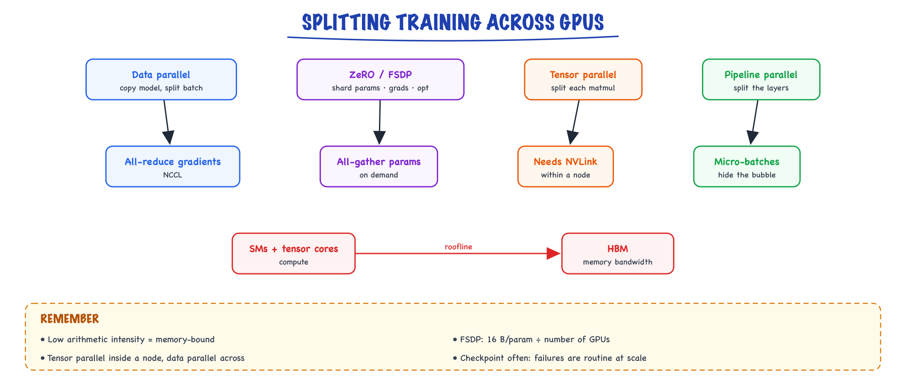

GPUs & distributed training // Inference & serving
GPU architecture, the roofline, data/tensor/pipeline parallelism, ZeRO and FSDP, fault tolerance.
01 — At a glance

Four ways to spread work across GPUs, and the two hardware limits behind every choice: compute in the SMs and bandwidth to HBM.
02 — New words
| Word | Meaning |
|---|---|
| FLOP | One floating-point operation (an add or a multiply). FLOP/s is how many per second a chip can do. |
| SM (streaming multiprocessor) | One of the ~100+ independent processors on a GPU. Each has its own tensor cores and a small fast memory. |
| Tensor core | Hardware inside each SM that multiplies small matrices in one step. Almost all of a GPU's FLOP/s live here. |
| HBM | High-bandwidth memory: the GPU's main memory (80 GB on an H100), fast but far slower than on-chip memory. |
| SRAM / shared memory | Small on-chip memory inside each SM (hundreds of KB). An order of magnitude faster than HBM. |
| Arithmetic intensity | FLOPs performed per byte moved from memory. Decides whether an operation is limited by compute or by memory. |
| Roofline | The chart showing achievable FLOP/s as a function of arithmetic intensity: a sloped memory roof, then a flat compute roof. |
| MFU | Model FLOPs utilisation: the fraction of the hardware's peak FLOP/s that does useful model maths. 40% is good for large training. |
| NVLink / InfiniBand | The fast links between GPUs inside one server, and the network between servers. |
| All-reduce | A group operation where every GPU ends with the sum of everyone's values. Built from reduce-scatter + all-gather. |
| Data parallelism (DDP) | Every GPU holds the whole model and processes different data; gradients are averaged with all-reduce. |
| ZeRO / FSDP | Data parallelism that shards optimizer state, gradients and finally the weights themselves across GPUs. |
| Tensor parallelism | Splitting each weight matrix across GPUs so they compute one layer together. |
| Pipeline parallelism | Splitting the layers into stages on different GPUs, passing activations along. |
| Bubble | Time pipeline stages sit idle waiting for work at the start and end of each step. |
| Activation checkpointing | Storing only some layer inputs during the forward pass and recomputing the rest during backward, trading compute for memory. |
The full explanation
03 — The question
Training a large model hits three walls at once:
- Compute: the total arithmetic is so large that one GPU would take decades.
- Memory: the training state does not fit on one GPU.
- Communication: once you split the work across GPUs, they spend time talking instead of computing.
Every technique in this topic (the roofline, data, tensor and pipeline parallelism, ZeRO and FSDP, checkpointing) trades one wall against another. If you can put numbers on each wall for a given model, you can answer almost any interview question about training or serving at scale. We will do exactly that for a 7B model and a 70B model.
04 — Step 1: how much compute training takes
A forward pass costs about 2 FLOPs per parameter per token (one multiply and one add per weight). The backward pass costs about twice the forward. So training costs approximately
\[ C \approx 6\, N\, D \]FLOPs, for \(N\) parameters and \(D\) training tokens.
Worked, 7B on 2 trillion tokens: \(C = 6 \times 7\times10^{9} \times 2\times10^{12} = 8.4\times10^{22}\) FLOPs. An H100 peaks at about 989 TFLOP/s in BF16 for dense matmuls. At a realistic 40% MFU it delivers about \(3.96\times10^{14}\) FLOP/s, so:
\[ \frac{8.4\times10^{22}}{3.96\times10^{14}} \approx 2.1\times10^{8}\ \text{GPU-seconds} \approx 59{,}000\ \text{GPU-hours} \]On 1,024 GPUs that is about 58 hours, or 2.4 days. The same arithmetic for a 70B model on 15 trillion tokens gives about 4.4 million GPU-hours, roughly 22 days on 8,192 GPUs. This one formula is how labs plan budgets, and how you should sanity-check any claim about training cost.
05 — Step 2: how much memory training takes
Mixed-precision training with AdamW stores, per parameter:
| What | Bytes |
|---|---|
| BF16 weights (used in forward and backward) | 2 |
| BF16 gradients | 2 |
| FP32 master copy of the weights | 4 |
| Adam first moment \(m\) (FP32) | 4 |
| Adam second moment \(v\) (FP32) | 4 |
| Total | 16 |
A 7B model needs \(16 \times 7\times10^{9} = 112\) GB before counting a single activation: already more than an 80 GB GPU. A 70B model needs 1,120 GB. On top of that, activations (the intermediate values saved for the backward pass) grow with batch size × sequence length × hidden size × layers, and for long sequences they can exceed the 16 bytes per parameter.
So even a 7B model cannot be trained the naive way on one GPU. The rest of the topic is about splitting this state and this compute.
06 — Step 3: inside one GPU, and the roofline
An H100 (SXM) has 132 SMs, each with tensor cores and about 228 KB of fast shared memory, 50 MB of L2 cache, and 80 GB of HBM delivering about 3.35 TB/s. Two numbers matter most: 989 TFLOP/s of BF16 compute and 3.35 TB/s of memory bandwidth.
Whether an operation can use all that compute depends on its arithmetic intensity, FLOPs per byte read or written. The chip balances at
\[ \frac{989\times10^{12}\ \text{FLOP/s}}{3.35\times10^{12}\ \text{B/s}} \approx 295\ \text{FLOP per byte} \]Below about 295 FLOP/byte the operation is memory-bound (the cores wait for data); above it, compute-bound. That threshold is the bend in the roofline.
Two operations, worked
- Decoding one token, batch of 1. Each weight (2 bytes in BF16) is read once and used for one multiply-add (2 FLOPs): about 1 FLOP per byte. Three hundred times below the ridge, so the GPU runs at under 1% of peak compute. This is why single-user decoding is memory-bound and why quantization (fewer bytes) speeds it up.
- Decoding with batch \(B\). Each weight read now serves \(B\) sequences: intensity grows to about \(B\) FLOP/byte. Batching is how serving engines climb the roofline, until the KV cache (which is per-sequence and does not get reused) dominates.
- A training matmul, \(4096 \times 4096\) weights against a batch of 4,096 tokens: about \(2 \times 4096^3 \approx 1.4\times10^{11}\) FLOPs over roughly \(3 \times 4096^2 \times 2 \approx 10^{8}\) bytes, about 1,365 FLOP/byte. Comfortably compute-bound.
The gap between HBM and on-chip SRAM is why FlashAttention exists: standard attention writes the full \(n \times n\) score matrix to HBM and reads it back; FlashAttention processes it in tiles that stay in SRAM, turning a memory-bound operation into a compute-bound one.
07 — Step 4: data parallelism and the cost of all-reduce
The simplest split: every GPU keeps a full copy of the model, takes a different slice of the batch, computes its own gradients, and then all GPUs average their gradients before stepping. That averaging is an all-reduce.
The standard ring all-reduce has each of \(n\) GPUs send (and receive) about
\[ 2 \cdot \frac{n-1}{n} \cdot S \]bytes, where \(S\) is the size of the gradients. Notice it barely depends on \(n\): adding GPUs does not make each one send much more.
Worked: 7B parameters of BF16 gradients is \(S = 14\) GB. With 8 GPUs, each sends \(2 \times \tfrac{7}{8} \times 14 = 24.5\) GB per step. Over NVLink at roughly 450 GB/s in each direction, that is about 55 ms. Frameworks hide most of it by starting the all-reduce for the last layers' gradients while the backward pass is still computing earlier layers ("overlap").
Data parallelism scales compute nicely but does nothing for memory: every GPU still holds all 16 bytes per parameter. For 7B, that is 112 GB per GPU. It does not fit.
08 — Step 5: ZeRO and FSDP, sharding the training state
The memory in data parallelism is duplicated \(n\) times for no reason. ZeRO removes the duplication in three stages, with \(n\) GPUs:
| Stage | What is sharded | Bytes per parameter per GPU | 7B on 8 GPUs | 70B on 8 GPUs |
|---|---|---|---|---|
| Plain DDP | Nothing | \(16\) | 112 GB | 1,120 GB |
| ZeRO-1 | Optimizer state (the 12 bytes) | \(4 + 12/n\) | 38.5 GB | 385 GB |
| ZeRO-2 | + gradients | \(2 + 14/n\) | 26.3 GB | 262.5 GB |
| ZeRO-3 / FSDP | + the weights themselves | \(16/n\) | 14 GB | 140 GB |
With ZeRO-3 (PyTorch's FSDP implements the same idea), each GPU stores only its 1/n slice of everything. When a layer runs, its full weights are briefly gathered from all GPUs (an all-gather), used, and freed. Gradients are summed and re-sharded (a reduce-scatter). The cost is communication: about 1.5 times the traffic of plain data parallelism, because the weights are gathered once for the forward pass and again for the backward.
The table shows the limit, too: 70B still needs 140 GB per GPU on 8 GPUs. You must either shard across more GPUs (FSDP across 16 or 32), or split the model itself, which is what the next two steps do.
09 — Step 6: tensor parallelism, splitting each layer
Tensor parallelism splits the matrices inside a layer. Take the MLP block \(Y = \mathrm{GELU}(XA)\,B\):
- Split \(A\) by columns across \(t\) GPUs. Each GPU computes its own slice of \(XA\) from the full input, and can apply GELU locally because GELU acts element by element.
- Split \(B\) by rows to match. Each GPU multiplies its slice and gets a partial sum of \(Y\).
- One all-reduce adds the partial sums.
Attention splits the same way, by heads. The result is two all-reduces per transformer layer in the forward pass and two in the backward. That is far more frequent communication than data parallelism, and it sits directly on the critical path, so tensor parallelism needs the fastest links available: NVLink inside one server. In practice the tensor-parallel degree is at most 8 (one server's GPUs).
It also helps inference: a 70B model split 4 ways serves from four GPUs at lower latency than from one.
10 — Step 7: pipeline parallelism, splitting by layers
Pipeline parallelism gives each of \(p\) GPU groups a contiguous block of layers. Activations flow forward from stage to stage and gradients flow back. Communication is light (only activations at the boundaries), so stages can sit on different servers.
The problem is idle time. With one batch, stage 2 waits while stage 1 works, and so on. The fix is to cut the batch into \(m\) micro-batches so stages work on different micro-batches at once. The idle fraction, the bubble, for the standard schedules (GPipe, 1F1B) is
\[ \text{bubble} = \frac{p - 1}{m + p - 1} \]| Stages \(p\) | Micro-batches \(m\) | Time idle |
|---|---|---|
| 4 | 4 | 43% |
| 4 | 8 | 27% |
| 4 | 32 | 8.6% |
| 8 | 32 | 17.9% |
More micro-batches shrink the bubble but need a large global batch. The 1F1B schedule (alternate one forward and one backward) keeps fewer micro-batches' activations alive at once, saving memory; interleaved and "zero-bubble" schedules cut the bubble further by splitting the backward pass more cleverly.
11 — Step 8: the other axes, sequence, context and expert
- Sequence parallelism splits the operations that tensor parallelism leaves duplicated (layer norm, dropout) along the sequence, saving activation memory.
- Context parallelism splits a single very long sequence across GPUs; attention then needs keys and values from other GPUs, passed around a ring ("ring attention"). This is how 100K-plus-token contexts are trained.
- Expert parallelism places different experts of a mixture-of-experts model on different GPUs. Every layer sends each token to the GPU holding its chosen expert and back again: an all-to-all exchange whose cost and load balance dominate MoE training and serving.
12 — Step 9: putting the axes together
Large runs combine everything, placing each axis where its communication fits the network:
- Tensor parallelism inside a server (8 GPUs on NVLink): most frequent communication, fastest links.
- Pipeline parallelism across a few servers: light, point-to-point traffic.
- Data parallelism with FSDP across everything else: traffic overlaps with compute.
- Context and expert parallelism where the model needs them.
A sketch for a 70B model on 512 GPUs: tensor parallel 8 × pipeline parallel 4 × data parallel 16. Each GPU holds 1/32 of the model's layers-and-columns, about 35 GB of training state, leaving room for activations. Meta's largest Llama 3 model (405B) was trained on up to 16,000 H100s combining tensor, pipeline, context and FSDP-style data parallelism in this way.
Two more memory tools close the gap when activations are the problem:
- Activation checkpointing: save only each layer's input, recompute the inside during backward. Costs roughly 30% more compute; cuts activation memory severalfold.
- Gradient accumulation: run several small micro-batches and add their gradients before one optimizer step, reaching a large effective batch without its memory.
13 — Step 10: failures are normal at scale
With thousands of GPUs, something breaks every few hours: a GPU, a link, a host. Meta reported hundreds of unexpected interruptions over the roughly two-month Llama 3 pre-training run. Large runs are designed around this:
- Checkpoint frequently (asynchronously, so training does not pause), sized so lost work is minutes, not hours.
- Detect hangs and slow nodes automatically; restart from the last checkpoint on spare hardware.
- Make data loading deterministic and resumable, so a restart does not repeat or skip data.
14 — A worked plan you can say out loud
"Fine-tune a 7B model fully on one server of 8 × 80 GB H100s, sequence length 4,096."
- Memory: 112 GB of training state, so not plain DDP. FSDP across 8 GPUs gives 14 GB per GPU for state.
- Activations: with checkpointing and a per-GPU micro-batch of a few sequences, tens of GB at most. Fits in the remaining ~60 GB.
- Communication: all on NVLink, overlapped with compute. No tensor or pipeline parallelism needed.
- Throughput: at 40% MFU, 8 GPUs deliver about \(3.2\times10^{15}\) FLOP/s. One billion tokens costs \(6 \times 7\times10^9 \times 10^9 = 4.2\times10^{19}\) FLOPs, about 3.7 hours.
For the same job on a single 24 GB GPU, you would switch to QLoRA (4-bit frozen base plus small trained adapters), because no amount of sharding helps with only one GPU.
15 — In code: FSDP in practice, and a calculator
# launch on 8 GPUs: torchrun --nproc_per_node=8 train.py import torch, torch.distributed as dist from torch.distributed.fsdp import FullyShardedDataParallel as FSDP, MixedPrecision from torch.distributed.fsdp.wrap import transformer_auto_wrap_policy from functools import partial from transformers import AutoModelForCausalLM from transformers.models.llama.modeling_llama import LlamaDecoderLayer dist.init_process_group("nccl") torch.cuda.set_device(dist.get_rank() % torch.cuda.device_count()) model = AutoModelForCausalLM.from_pretrained("meta-llama/Llama-3.1-8B", torch_dtype=torch.bfloat16) model.gradient_checkpointing_enable() # activation checkpointing model = FSDP( model, auto_wrap_policy=partial(transformer_auto_wrap_policy, transformer_layer_cls={LlamaDecoderLayer}), mixed_precision=MixedPrecision(param_dtype=torch.bfloat16, reduce_dtype=torch.bfloat16), device_id=torch.cuda.current_device(), ) # ZeRO-3: params, grads, optimizer sharded opt = torch.optim.AdamW(model.parameters(), lr=2e-5, weight_decay=0.1)
def plan(params_b, tokens_b, gpus, mfu=0.40, peak_tflops=989, sharding="zero3"): """Back-of-envelope: training days and per-GPU state memory.""" N, D = params_b * 1e9, tokens_b * 1e9 days = 6 * N * D / (gpus * peak_tflops * 1e12 * mfu) / 86400 per_param = {"ddp": 16, "zero1": 4 + 12 / gpus, "zero2": 2 + 14 / gpus, "zero3": 16 / gpus}[sharding] return round(days, 1), round(N * per_param / 1e9, 1) print(plan(7, 2000, 1024)) # (2.4, 0.1): 2.4 days; state is tiny per GPU at 1,024-way sharding print(plan(7, 1, 8, sharding="ddp")) # 112 GB per GPU: plain DDP does not fit on 80 GB
16 — GPU architecture in one picture
How a GPU actually spends time, and how training splits across many of them. Your distributed-systems background carries most of this.
- SMs (streaming multiprocessors): ~100+ per GPU, each with CUDA cores and tensor cores (dedicated matrix-multiply units; most of the FLOPs).
- Memory hierarchy: registers → shared memory/L1 (SRAM, ~200 KB per SM, very fast) → L2 → HBM (40–80+ GB, ~2–3.4 TB/s).
- Execution: a kernel launches a grid of thread blocks; each block runs on one SM; threads execute in warps of 32 in lockstep.
- Interconnect: NVLink within a node (~600–900 GB/s), InfiniBand/RoCE across nodes (~50–400 Gb/s per link).
| GPU | Memory | BF16 dense | Typical use |
|---|---|---|---|
| T4 | 16 GB | ~65 TFLOPS (fp16, no bf16) | free notebooks, small inference |
| A10G / L4 | 24 GB | ~70–120 TFLOPS | QLoRA, small-model serving |
| A100 | 40/80 GB | ~312 TFLOPS | training, serving |
| H100 | 80 GB | ~990 TFLOPS, FP8 ~2× | large training and serving |
17 — Arithmetic intensity and the roofline
arithmetic intensity I = FLOPs / bytes moved ridge point = peak FLOPs / bandwidth A100: 312e12 / 2e12 ≈ 156 FLOPs/byte I < ridge → memory-bound I > ridge → compute-bound
Matrix–vector (decode, batch 1): ~1 FLOP/byte → hopelessly memory-bound. Large matmul (prefill, training): hundreds → compute-bound. Elementwise ops (layernorm, activations, softmax) are always memory-bound, which is why they get fused. This single ratio explains batching, fusion, FlashAttention and quantization.
MFU (model FLOPs utilization) = achieved / peak FLOPs; good LLM training runs reach 35–55%.
18 — Data parallelism and all-reduce
Each GPU holds a full model copy and a different slice of the batch. After backward, gradients are averaged across GPUs (all-reduce), so every replica takes the identical step.
Ring all-reduce: arrange N GPUs in a ring and split the gradient into N chunks. Reduce-scatter (N−1 steps): each GPU ends up owning the full sum of one chunk. All-gather (N−1 steps): circulate the summed chunks. Each GPU sends 2·(N−1)/N of the data in total, nearly independent of N: bandwidth-optimal. NCCL implements this (plus tree variants).
DDP buckets gradients and starts all-reducing a bucket as soon as backward finishes those layers, overlapping communication with computation.
# torchrun --nproc_per_node=4 train.py import torch.distributed as dist dist.init_process_group("nccl") rank = dist.get_rank(); torch.cuda.set_device(rank) model = DDP(Model().cuda(), device_ids=[rank]) sampler = DistributedSampler(ds); dl = DataLoader(ds, sampler=sampler, batch_size=8) for epoch in range(E): sampler.set_epoch(epoch) # different shuffle each epoch ... # same loop as PyTorch in practice; save only on rank 0
19 — ZeRO and FSDP: sharding the training state
DDP replicates all 16 bytes/param on every GPU. ZeRO removes the redundancy in stages:
| Stage | Sharded | Memory/GPU (Ψ params, N GPUs) |
|---|---|---|
| DDP | nothing | 16Ψ |
| ZeRO-1 | optimizer states | 4Ψ + 12Ψ/N |
| ZeRO-2 | + gradients | 2Ψ + 14Ψ/N |
| ZeRO-3 / FSDP | + parameters | 16Ψ/N |
FSDP flow per layer: all-gather that layer's parameter shards → compute forward → free them; in backward, all-gather again → compute grads → reduce-scatter grads so each GPU keeps only its shard → each GPU updates its own shard. Communication ≈ 1.5× DDP, memory divided by N. 7B on 8 GPUs: ~14 GB of state each.
Distributed-systems analogy: parameters are partitioned like keys in a sharded store; all-gather is a scatter-gather read before use. Also available: CPU/NVMe offload (ZeRO-Offload/Infinity) for when GPU memory runs out.
20 — Tensor, pipeline, sequence and expert parallelism
- Tensor parallel (Megatron-LM): split matmuls inside a layer. FFN: column-split W₁ (each GPU computes part of the hidden), row-split W₂, one all-reduce to combine. Attention: split heads. Needs an all-reduce per layer → keep within an NVLink node. Also how big models are served across GPUs.
- Pipeline parallel: different layers on different GPUs; micro-batches flow through like an assembly line. Cost is the "bubble" of idle time at start and end; schedules like 1F1B shrink it.
- Sequence / context parallel: split very long sequences across GPUs (ring attention).
- Expert parallel: place MoE experts on different GPUs; tokens move via all-to-all.
- 3D/4D parallelism: TP within node × PP across nodes × DP/FSDP across replicas. Frameworks: Megatron-LM, DeepSpeed, PyTorch FSDP2/TorchTitan, Nanotron.
21 — Fault tolerance at scale
At thousands of GPUs, something fails every few hours: GPU errors, NCCL hangs, node loss. Runs survive with frequent sharded (distributed) checkpoints, async checkpoint writes, watchdogs that detect hangs, automatic restart from the latest checkpoint, and loss-spike detection with rollback. The same concerns as any long-running distributed job you've operated, with expensive hardware.
22 — Practical cloud GPU work
- Choose by VRAM first, then bandwidth. QLoRA ≤ 8B and small-model serving: 24 GB (AWS g5 A10G, GCP g2 L4). Full fine-tunes and big serving: A100/H100 80 GB (AWS p4d/p5, GCP a2/a3).
- Spot/preemptible instances are 60–90% cheaper; checkpoint to S3/GCS every N steps and resume automatically.
- Use a CUDA or PyTorch base Docker image; driver, CUDA and PyTorch versions must be compatible. Install the NVIDIA container toolkit so containers see GPUs.
- Monitor with
nvidia-smi/nvtop(utilization, memory, power). Low utilization usually means the data pipeline or CPU is the bottleneck. - GPU marketplaces (RunPod, Lambda, Modal, Vast) are often cheaper and faster to start than hyperscalers for experiments.
In production
23 — Where people get lost
- Counting only the weights. Training needs about 16 bytes per parameter plus activations, not 2.
- Assuming more GPUs means proportionally faster. Communication, bubbles and small per-GPU batches all eat into scaling; MFU usually falls as you add GPUs.
- Using tensor parallelism across servers. It communicates every layer and needs NVLink-class bandwidth.
- Ignoring the bubble. Four pipeline stages with four micro-batches leaves GPUs idle 43% of the time.
- Thinking FSDP removes communication. It trades memory for about 1.5× the traffic of plain data parallelism.
- Calling decode "compute-heavy". At small batch sizes it uses under 1% of the compute; it is limited by memory bandwidth.
- Forgetting failures in the plan. At thousands of GPUs, checkpoint and restart time is part of the schedule.
24 — How this connects
Builds on
- PyTorch in practice — Tensors, autograd, a trustworthy training loop, mixed precision, GPU memory and debugging a run.
Where this shows up later
- Portfolio projects — Five projects from micrograd to a shipped service, and a weekend build that makes interview answers real.